Offenen Bildungsmaterialien direkt integriert in Endanwendungen — einfach durchsuchbar, datenschutzfreundlich und frei verfügbar.
Eine JavaScript-Komponente, die sich in viele Frameworks einbinden lässt — direkt in der eigenen Anwendung.
Ausgewählte Quellen gleichzeitig durchsuchen
Bilder, Texte, Audio & Video — alles über eine Suche auffindbar
Quellen gezielt ein-/ausschalten, Ergebnisse filtern
Läuft innerhalb der eigenen App — kein externer Dienst nötig
Lizenz, Autor & Co. direkt in der App nutzbar
Farben, Schriften & Layout per CSS-Variablen an das eigene Design anpassen
Dezentrale Bildungsmaterialien über das Nostr-Protokoll — ein oder mehrere Relays frei konfigurierbar. (Klick für weitere Quellen)
Bilder & Audio unter freien Lizenzen
Piktogramme für leichte Sprache
Religionspädagogische Materialien — Danke an Joachim!
Freie Medien aus Wikipedia & Co.
Open Educational Resources Search Index — über Nostr AMB Relay
Weitere Anbieter jederzeit ergänzbar

Alle Quellen liefern Daten in unterschiedlichen Formaten. Das OER Finder Plugin bildet jedes Ergebnis auf den AMB-Standard ab — so wird jede Quelle zum First-Class Citizen.
AMB definiert einheitliche Metadaten für alle Bildungsressourcen — unabhängig von der Herkunft.
Der AMB Nostr Relay speichert OER-Metadaten als kryptographisch signierte Events — ohne zentrale Instanz.
Openverse, Wikimedia, ARASAAC — jede Quelle wird automatisch ins AMB-Format übersetzt.
Viele Quellen mit einer einzigen Suchanfrage durchsuchen
Nutzerdaten bleiben geschützt durch integrierten Proxy
Wenige Zeilen genügen für die Integration in jede Website
MIT-Lizenz, frei verfügbar, erweiterbar und von der Community getragen
Installation, Verwendung, Quellen & Beispiele — alles im Repository:
📖 README auf GitHub öffnen<oer-search api-url="https://mein-server.de"> <oer-list></oer-list> <oer-load-more></oer-load-more> </oer-search>
github.com/edufeed-org/oer-finder-plugin
Jannik Streek, jannik@b310.de